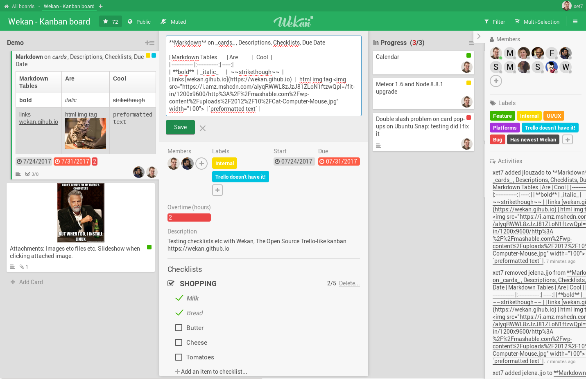
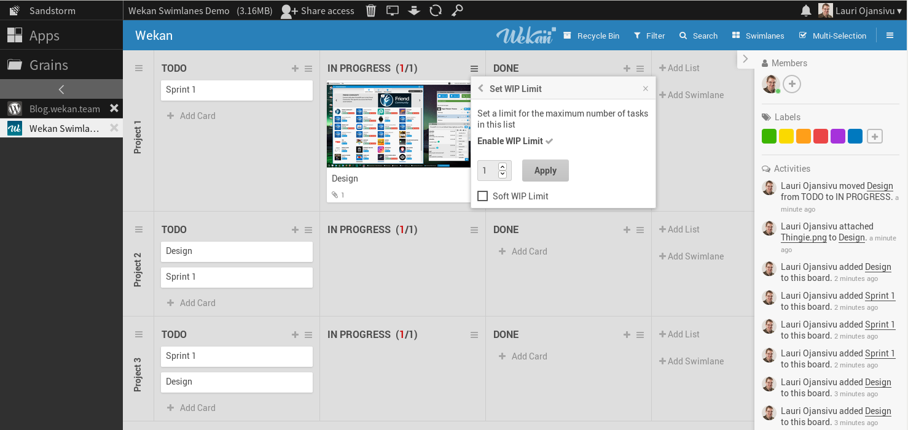
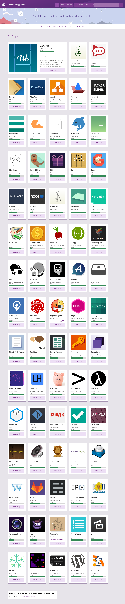
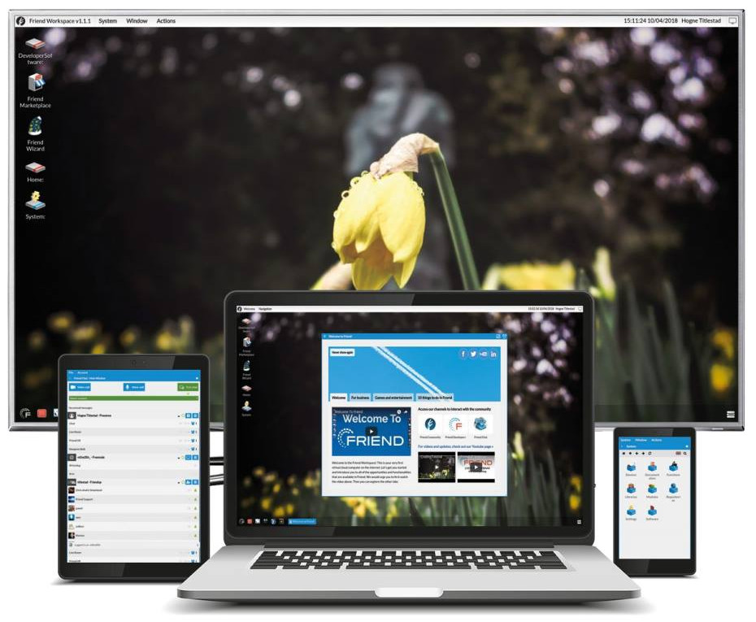
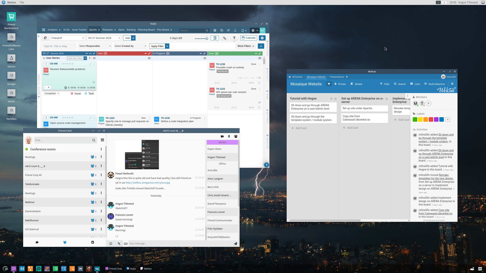
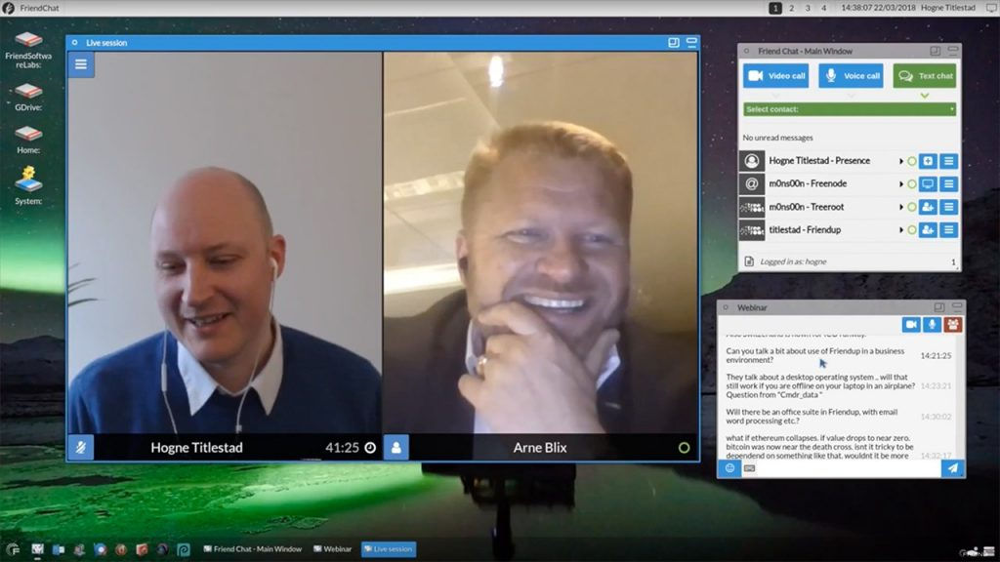
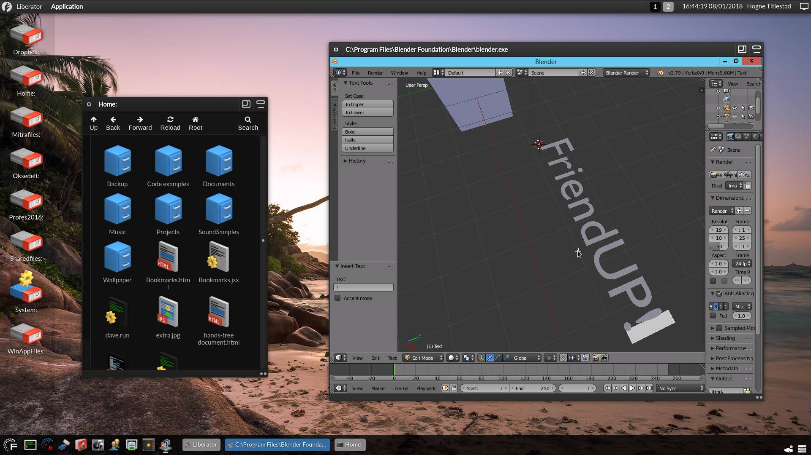
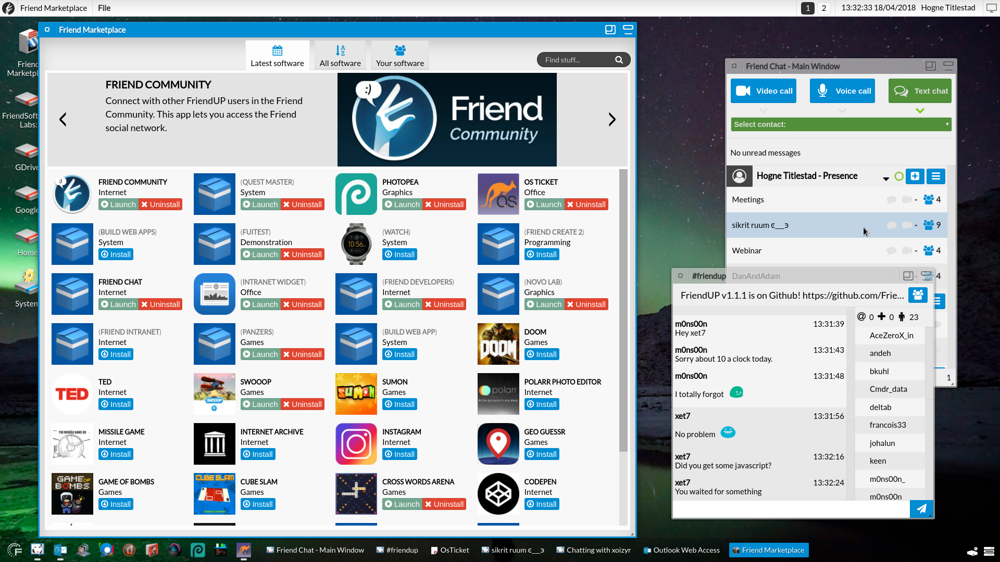

Sometime in near future, Wekan Kanban board will come from v0.9x to v1.00. You can read how we did get here.
Platforms
Current
Standalone Wekan, available in Webbrowser: Snap, Docker, VirtualBox, Source, see Releases, and other Standalone Wekan Platforms. Wekan in Lists view

Sandstorm, available in Webbrowser. Wekan in Swimlanes view on Sandstorm

Other apps in Sandstorm platform

Upcoming
Friend, available in Webbrowser, Desktop, iOS/Android Mobile apps

Wekan beta running on Friend. Not available and not integrated yet

Live video chat in Friend

Blender running in Friend

Friend Marketplace for Open Source and Paid Apps

More
- Website: Wekan Kanban board and Wekan Team (xet7, maintainer of Wekan) / Sandstorm / Friend
- Open Source: Wekan / Sandstorm / Friend
- Security: Wekan / Sandstorm Security Docs and Security Review / Friend PDF page 10
- Press: Wekan / Sandstorm / Friend
- Roadmap: Wekan / Sandstorm / Friend
- Currently xet7 is looking at could Sandstorm run inside of Friend in desktop window (iframe)
- Would you like to have your Meteor app be in some platform? Like Wekan?
- There has been Wekan releases happening when something new is ready, fastest at 3 times per day. This has been made possible by donated fast servers from CNCF, Wekan source code contributors and translators worldwide. Would you or your company like to support Wekan maintainer xet7, so development continues at this speed?
Contact
Email: x@xet7.org